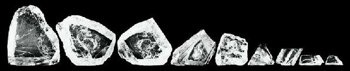
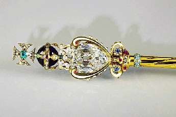

Борис Акунин
Мой календарь
Сегодня смотрите в оба. Можете найти что-нибудь драгоценное. Такой уж это день.
26 января 1905 года в Трансваале был обнаружен самый крупный алмаз всех времен «Куллинан», он же «Великая Звезда Африки». Камень весил около 600 граммов и впоследствии, при огранке, из этого бульника получилось три огромных бриллианта, шесть очень больших и еще 96 немаленьких.
Главный из бриллиантов, «Куллинан I», весом 530 каратов, украшает скипетр британских королей.
Но на свете есть вещи и поценнее алмазов. Они где-то рядом. Не прозевайте.